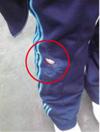
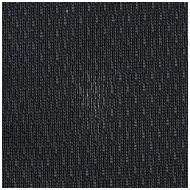
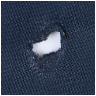
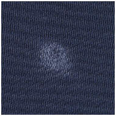
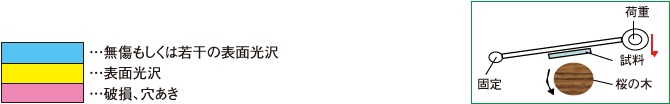
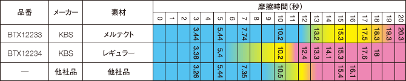

「メルテクト」は素材の摩擦熱による溶融を軽減する目的で開発されたテキスタイルです。
フィラメント内部の溶融防止成分が摩擦熱を瞬間的に吸収し、テキスタイルの溶融を抑え、傷みを軽減する効果があります。
特にアウトドアウェアやスポーツ・トレーニングウェアなどの摩擦によるテキスタイルの傷みの軽減に効果を発揮いたします。

編み生地を貼り付けたズボンを履き、体育館でスライディングした時の生地破損状態を観察。

メルテクト

レギュラーポリエステル

他社品


※加工の条件、使用方法によっては性能に差が生じる場合がありますので、事前確認の上、ご使用ください。
ＫＢセーレン株式会社
衣料資材販売部
kbs.info@kb.seiren.com